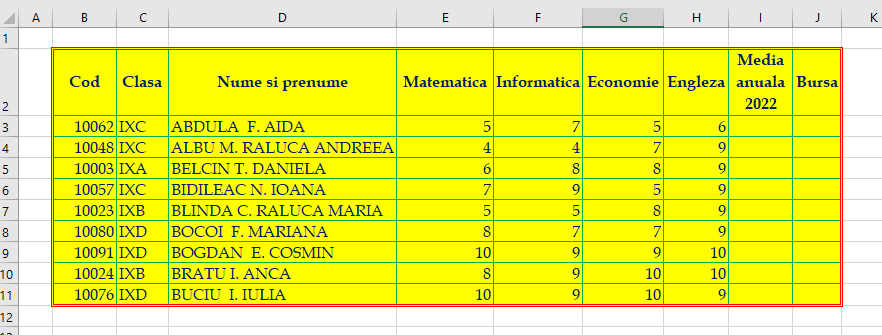
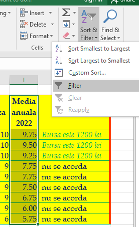
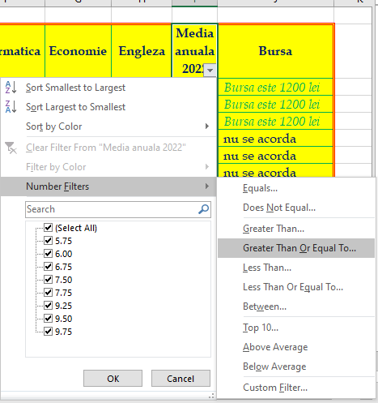
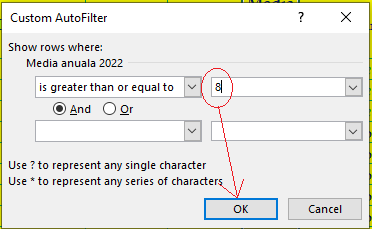
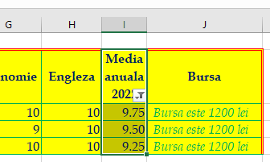

---->
----> 


- se va utiliza font Book Antiqua, dimensiune 12,
culoare albastru ; - fundalul tabelului va avea
culoarea galben ; - aplicaţi tabelului un chenar de
culoare rosie , stilul liniei continuă dublă, pentru partea exterioară şi deculoare verde , stilul liniei continuă simplă, pentru partea interioară; - redenumiţi foaia de calcul Sheet1 cu numele STAT1;
- calculaţi media pentru fiecare elev;
- câmpul Bursa se va completa selectiv, în funcţie de valoarea corespondentă din câmpul Media conform relaţiei: dacă media>=9 atunci "Bursa este de 1200 lei", altfel "nu se acordă";
-
pentru elevii care primesc bursă aplicaţi un format condiţional astfel încât valorile care respectă condiţia să fie scrise cursiv cu
culoarea verde ;
EXEMPLU:
- Selectați celulele pe care doriți să le formatați. Puteți selecta o coloană, mai multe coloane sau întregul tabel dacă doriți să aplicați formatul condiționat la rânduri;
- În fila Acasă(Home), în grupul Stiluri(Styles), faceți clic pe Formatare condiționată(Conditional Formatting) --> Regulă nouă(New Rule)
- În fereastra Regulă nouă de formatare(New Formatting Rule), selectați Folosiți o formulă pentru a determina ce celule să formatați(Use a formula to determine which cells to format);
- Introduceți formula în caseta corespunzătoare;
- Faceți clic pe butonul Format... pentru a alege formatul personalizat:
- Comutați între filele Font, Chenar(Border) și Umplere(Fill) și jucați-vă cu diferite opțiuni, cum ar fi stilul fontului, culoarea modelului și efectele de umplere:
- Asigurați-vă că secțiunea Previzualizare(Preview) afișează formatul dorit și, dacă o face, faceți clic pe butonul OK pentru a salva regula.
EXEMPLU:
- Selectați celulele pe care doriți să le filtrați;
- În fila Acasă(Home), în grupul Editare(Editing), faceți clic pe Sortare & Filtrare(Sort & Filter):
- Click pe Filtrare(Filter): 
- Faceți clic pe săgeata care apare în cloana Media anuala 2022(cerculeţul roșu):
- Faceți clic pe Filtrare numere(Number Filters) -> Mai mare sau egal cu(Greater Than Or Equal To): 
- Scrieți valoarea dorită( 8 ) în căsuța corespunzătoare: 
- Faceți clic pe butonul OK: 